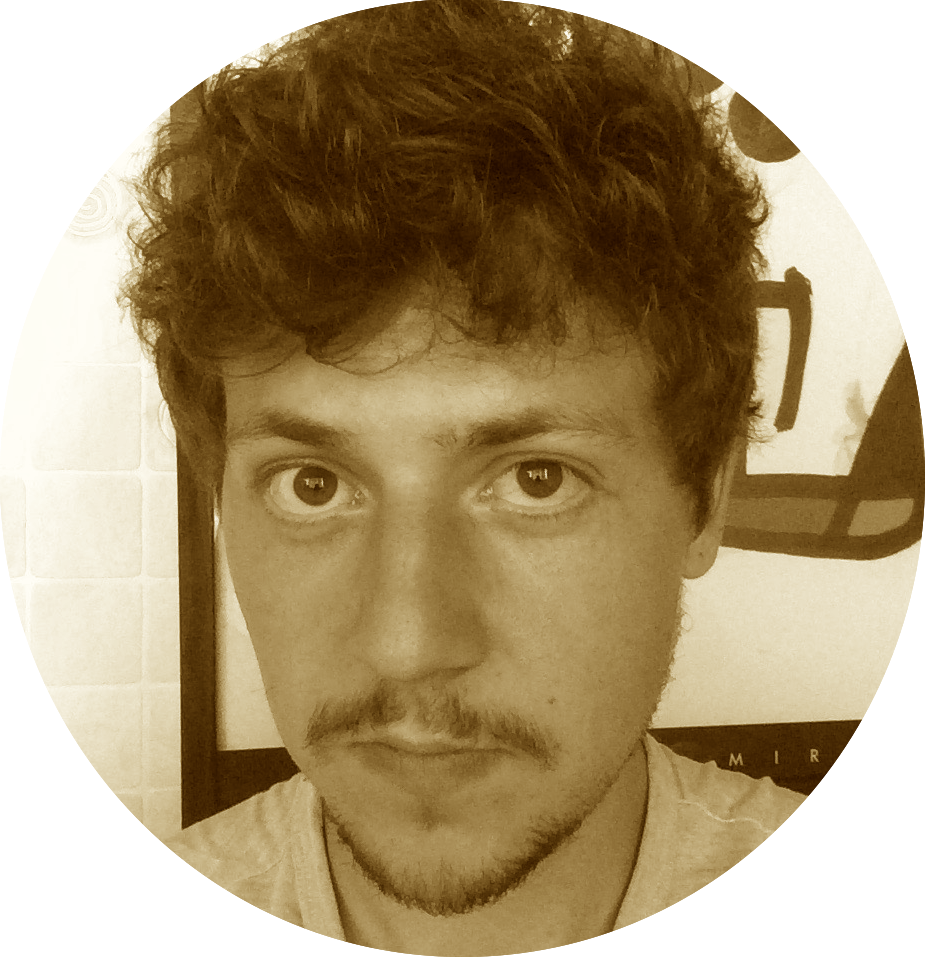

<div id="container" class="container justify-content-center">
  <div id="row" class="row">
    <div id="rowelement1" class="col-lg-5 col-md-12 col-sm-12 col-xs-12" >
      
    </div>
    <div class="col-lg-7 col-md-12 col-sm-12 col-xs-12">
      <br>
      <p class="text-justify">&nbsp;&nbsp;&nbsp;&nbsp;&nbsp;&nbsp;&nbsp;&nbsp;Hi ! I'm a 24 year old French-American
        Computer Science and Networks engineer. Ever since i was a kid i've been fascinated by telecommunication technologies,
        which lead me to become a professional in the field. I love writing programs, connecting devices and making them communicate.</p>
      <br>
      <p class="text-justify">I also love <s>soccer</s> football, playing guitar and composing music
        when i'm not just listening to it, hanging out with my friends, and traveling. I've been twice
        to South America by myself, part of the world i fell in love with, and planned to go back to
        on my next trips. I like listening to podcasts (The Joe Rogan Experience, Bill Burr's Monday
        Morning Podcast) and would love to create and host my own one day ! I'm not much of a bookworm
        but some of Eckhart Tolle and Don Miguel Ruiz's books changed my life for the better.</p>
      <br>
      <p class="text-justify">If you want to know more about me and what i do, feel free to download my
        resume, have a look at my personal projects, and contact me via email.</p>
      <br>
      <p id="quote" class="text-center"><i>"Science is organized knowledge. Wisdom is organized life." - Immanuel Kant</i></p>
    </div>
  </div>
</div>
